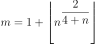
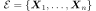
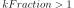
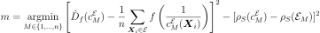
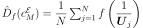
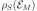
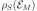
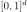

BernsteinCopulaFactory¶
-
class
BernsteinCopulaFactory(*args)¶ BernsteinCopula copula factory.
- Available constructors:
BernsteinCopulaFactory()
This class allows to estimate a copula in a nonparametric way as an
EmpiricalBernsteinCopula.See also
- Attributes
thisownThe membership flag
Methods
ComputeAMISEBinNumber(sample)Compute the optimal AMISE number of bins.
Compute the optimal log-likelihood number of bins by cross-validation.
Compute the optimal penalized Csiszar divergence number of bins.
build(*args)Build the nonparametric Bernstein copula estimator based on the empirical copula.
Build the nonparametric Bernstein copula estimator based on the empirical copula.
buildEstimator(*args)Build the distribution and the parameter distribution.
Accessor to the bootstrap size.
Accessor to the object’s name.
getId()Accessor to the object’s id.
getName()Accessor to the object’s name.
Accessor to the object’s shadowed id.
Accessor to the object’s visibility state.
hasName()Test if the object is named.
Test if the object has a distinguishable name.
setBootstrapSize(bootstrapSize)Accessor to the bootstrap size.
setName(name)Accessor to the object’s name.
setShadowedId(id)Accessor to the object’s shadowed id.
setVisibility(visible)Accessor to the object’s visibility state.
BuildCrossValidationSamples
-
static
ComputeAMISEBinNumber(sample)¶ Compute the optimal AMISE number of bins.
- Parameters
- sample2-d sequence of float, of dimension 1
The sample from which the optimal AMISE bin number is computed.
Notes
The number of bins is computed by minimizing the asymptotic mean integrated squared error (AMISE), leading to

where is the largest integer less than or equal to
 .
.
-
static
ComputeLogLikelihoodBinNumber(*args)¶ Compute the optimal log-likelihood number of bins by cross-validation.
- Parameters
- sample2-d sequence of float, of dimension 1
The sample of size
 from which the optimal log-likelihood bin number is computed.
from which the optimal log-likelihood bin number is computed.- kFractionint,
The fraction of the sample used for the validation.
Notes
Let  be the given sample. If , the bin number
 is given by:
is given by:
where is the density function of the
EmpiricalBernsteinCopulaassociated to the sample and the bin number
and the bin number  .
.If , the bin number
is given by:where and
-
static
ComputePenalizedCsiszarDivergenceBinNumber(*args)¶ Compute the optimal penalized Csiszar divergence number of bins.
- Parameters
- sample2-d sequence of float, of dimension 1
The sample of size
from which the optimal AMISE bin number is computed.- f
Function The function defining the Csiszar divergence of interest.
- alphafloat,
The penalization factor.
Notes
Let be the given sample. The bin number
is given by:
where is the density function of the
EmpiricalBernsteinCopulaassociated to the sample and the bin number ,  a Monte Carlo estimate of the Csiszar  divergence, the exact Spearman correlation of the empirical Bernstein copula and  the empirical Spearman correlation of the sample .
divergence, the exact Spearman correlation of the empirical Bernstein copula and  the empirical Spearman correlation of the sample .The parameter
 is controlled by the ‘BernsteinCopulaFactory-SamplingSize’ key in
is controlled by the ‘BernsteinCopulaFactory-SamplingSize’ key in ResourceMap.
-
build(*args)¶ Build the nonparametric Bernstein copula estimator based on the empirical copula.
Available usages:
build()
build(sample)
build(sample, method, objective)
build(sample, m)
- Parameters
- sample2-d sequence of float, of dimension d
The sample of size
 from which the copula is estimated.
from which the copula is estimated.- methodstring
The name of thebin number selection method. Possible choices are AMISE, LogLikelihood and PenalizedCsiszarDivergence. Default is LogLikelihood, given by the ‘BernsteinCopulaFactory-BinNumberSelection’ entry of
ResourceMap.- mint
The number of sub-intervals in which all the edges of the unit cube  are regularly partitioned.
- Returns
- copula
Distribution The estimated copula as a generic distribution.
- copula
-
buildAsEmpiricalBernsteinCopula(*args)¶ Build the nonparametric Bernstein copula estimator based on the empirical copula.
Available usages:
buildAsEmpiricalBernsteinCopula()
buildAsEmpiricalBernsteinCopula(sample)
buildAsEmpiricalBernsteinCopula(sample, method, objective)
buildAsEmpiricalBernsteinCopula(sample, m)
- Parameters
- sample2-d sequence of float, of dimension d
The sample of size
from which the copula is estimated.- methodstring
The name of thebin number selection method. Possible choices are AMISE, LogLikelihood and PenalizedCsiszarDivergence. Default is LogLikelihood, given by the ‘BernsteinCopulaFactory-BinNumberSelection’ entry of
ResourceMap.- mint
The number of sub-intervals in which all the edges of the unit cube are regularly partitioned.
- Returns
- copula
EmpiricalBernsteinCopula The estimated copula as an empirical Bernstein copula.
- copula
-
buildEstimator(*args)¶ Build the distribution and the parameter distribution.
- Parameters
- sample2-d sequence of float
Sample from which the distribution parameters are estimated.
- parameters
DistributionParameters Optional, the parametrization.
- Returns
- resDist
DistributionFactoryResult The results.
- resDist
Notes
According to the way the native parameters of the distribution are estimated, the parameters distribution differs:
Moments method: the asymptotic parameters distribution is normal and estimated by Bootstrap on the initial data;
Maximum likelihood method with a regular model: the asymptotic parameters distribution is normal and its covariance matrix is the inverse Fisher information matrix;
Other methods: the asymptotic parameters distribution is estimated by Bootstrap on the initial data and kernel fitting (see
KernelSmoothing).
If another set of parameters is specified, the native parameters distribution is first estimated and the new distribution is determined from it:
if the native parameters distribution is normal and the transformation regular at the estimated parameters values: the asymptotic parameters distribution is normal and its covariance matrix determined from the inverse Fisher information matrix of the native parameters and the transformation;
in the other cases, the asymptotic parameters distribution is estimated by Bootstrap on the initial data and kernel fitting.
Examples
Create a sample from a Beta distribution:
>>> import openturns as ot >>> sample = ot.Beta().getSample(10) >>> ot.ResourceMap.SetAsUnsignedInteger('DistributionFactory-DefaultBootstrapSize', 100)
Fit a Beta distribution in the native parameters and create a
DistributionFactory:>>> fittedRes = ot.BetaFactory().buildEstimator(sample)
Fit a Beta distribution in the alternative parametrization
 :
:>>> fittedRes2 = ot.BetaFactory().buildEstimator(sample, ot.BetaMuSigma())
-
getBootstrapSize()¶ Accessor to the bootstrap size.
- Returns
- sizeinteger
Size of the bootstrap.
-
getClassName()¶ Accessor to the object’s name.
- Returns
- class_namestr
The object class name (object.__class__.__name__).
-
getId()¶ Accessor to the object’s id.
- Returns
- idint
Internal unique identifier.
-
getName()¶ Accessor to the object’s name.
- Returns
- namestr
The name of the object.
-
getShadowedId()¶ Accessor to the object’s shadowed id.
- Returns
- idint
Internal unique identifier.
-
getVisibility()¶ Accessor to the object’s visibility state.
- Returns
- visiblebool
Visibility flag.
-
hasName()¶ Test if the object is named.
- Returns
- hasNamebool
True if the name is not empty.
-
hasVisibleName()¶ Test if the object has a distinguishable name.
- Returns
- hasVisibleNamebool
True if the name is not empty and not the default one.
-
setBootstrapSize(bootstrapSize)¶ Accessor to the bootstrap size.
- Parameters
- sizeinteger
Size of the bootstrap.
-
setName(name)¶ Accessor to the object’s name.
- Parameters
- namestr
The name of the object.
-
setShadowedId(id)¶ Accessor to the object’s shadowed id.
- Parameters
- idint
Internal unique identifier.
-
setVisibility(visible)¶ Accessor to the object’s visibility state.
- Parameters
- visiblebool
Visibility flag.